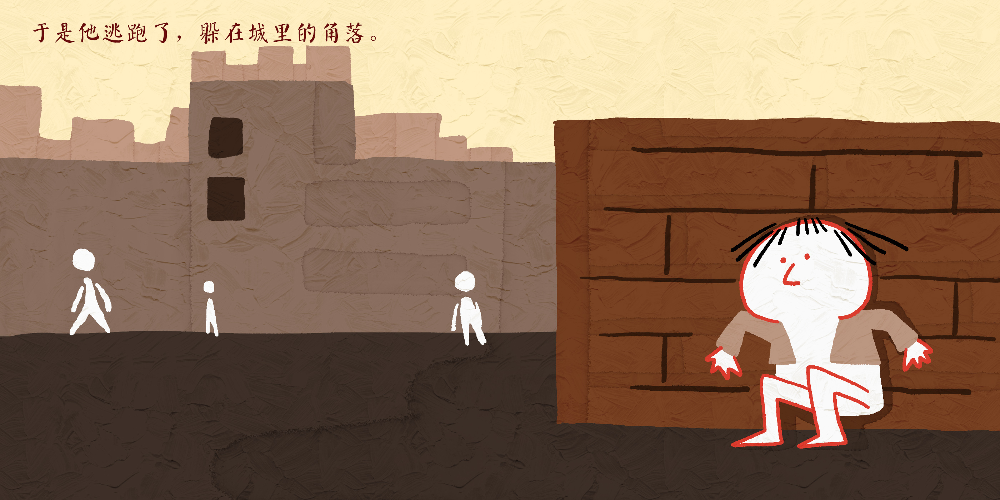
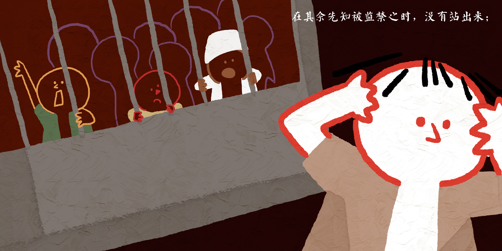
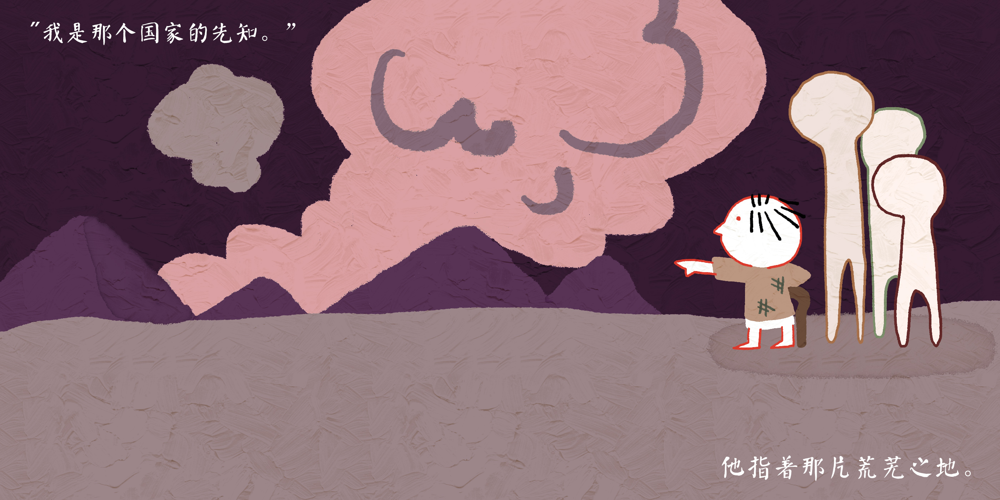
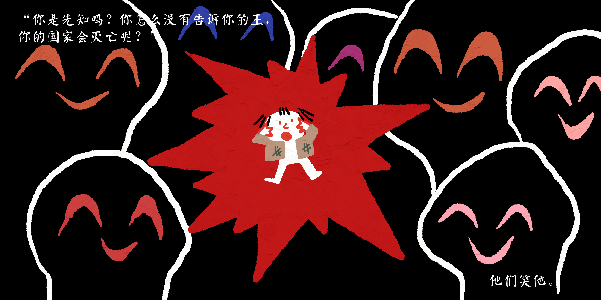

逃跑的先知
FLEE
收缩我们的存在感，可能只会让我们能够言说的范围越来越小。










我不知道我们面对某件事情时，（无论是什么事），会有多少次宁愿沉默而不反抗。一次次恐惧，一次次妥协，前方的路变得愈加狭小。但是我们有什么资格不说话呢？这个世界发生了这么多事，我们有什么资格站在外面，说，“我怕了，反正也不关我的事”？
沉默不能解决问题，迁就也是。当我们一直沉默、一直谨慎，直到连我们发声的平台都被拆毁，岂不是一件可悲的事吗？
怎能看着黑暗渗透大地，自己却无动于衷呢？
回想朋友曾说过的一句话：沉默和婉曲不能成为逼迫中的出路，殉道和见证才是能刺破黑暗时代的利剑。
我们的工作要是脱离了对那掌权者的信心，任何谨慎不都是滑稽可笑的吗？记住是谁在掌权，是谁在保守我们。要知道，我们这么做不是因为可以成功，而是因为这是对的。
我们是要说话的。